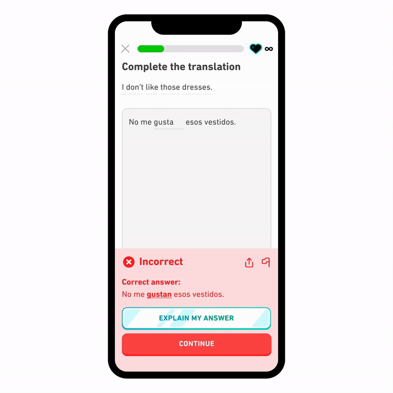

ChatGPT finds its applications in domains like customer service chatbots, providing instant responses to user requests, and virtual personal assistants, aiding in daily tasks and answering complex questions. In customer service, chatbots can be created that provideinstant and relevant information to the user. GPT can solve user requests, and transfer the user to a real human if need be. Additionally, it can be used as a virtual assistant as well, helping users with scheduling tasks, reminders, and smart home assistance.
Language Learning
Through a partnership with OpenAI, Duolingo released Duolingo Max, utilizing ChatGPT for features like 'Explain My Answer' and 'Roleplay', enhancing the language learning experience.
With 'Explain my Answer', users receive an explanation on why their answers were correct or incorrect. Delivered in natural conversational form, this feature serves to function the same as a human tutor.

With 'Roleplay', users practice their skills with AI personas that are designed with full backstories and personalities. For example, you can have a conversation with an AI barista in a cafe in Paris. You can order your drink, give specifics, and speak with the bartender on a variety of topics.
Traveling the World
Expedia integrates ChatGPT for functions like AI travel agents and organization tools, offering personalized travel recommendations and streamlined planning processes.
Using 'Travel Agent', rather than manually looking for flights, hotels, or destinations, users can interact with an AI travel agent to plan their vacation. Designed to be conversational and open-ended, it serves to give users curated recommendations on where to travel, curated to each individual user.
Furthermore, based on showed interest, the AI will automatically save hotels and other items into a shopping cart for each trip, streamlining the organization process and allowing users to easily understand their options at a glance.